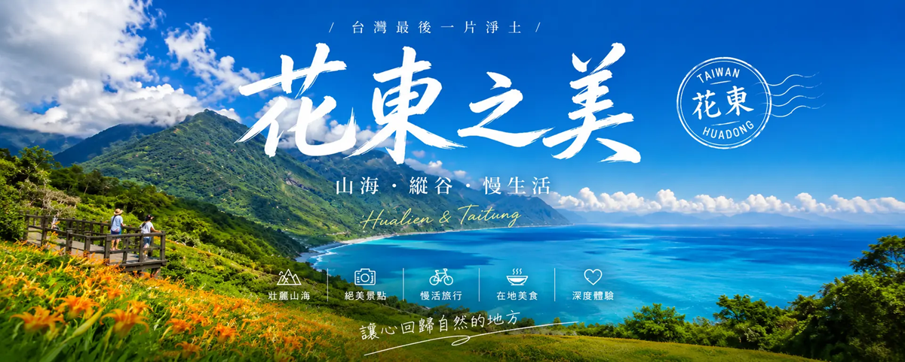

🏝️ 台灣旅遊文章
為什麼我愛台灣深度旅遊
老實說，我以前覺得「台灣有什麼好旅遊的？」——我就是在台灣長大的啊！但自從開始經營這個部落格、為了寫文章而重新走訪台灣各個角落之後，我才發現：我根本不認識這塊土地。
台灣最棒的地方在於：它對預算有限的旅客超級友善，而且交通超級方便。NT$2,000 可以從台北搭高鐵到墾丁、NT$500 可以在台南吃三頓牛肉麵、NT$1,500 可以在花蓮住一晚有海景的民宿。加上台灣人超熱情（「你有吃飽嗎？」是全世界最暖的問候語），這就是為什麼我每年至少深度旅遊台灣 3-4 次。
💡 個人真心話：我以前覺得「台北有什麼好玩的？」——直到我帶日本朋友去台北，才發現「我們每天經過的地方，原來這麼有趣！」象山看101、士林夜市吃大餅包、西門町逛潮流小店…… 台北其實是「重遊率最高」的城市，因為它一直在變。
我的台灣旅遊起點：說起來有點好笑，我第一次認真「旅遊」台灣，其實是帶韓國朋友環島。因為要當導遊，我才真正去查資料、排行程、找住宿——結果發現：我對台灣的認識，還不如一個來過三次的韓國人！從那次之後，我每年至少安排 3-4 次國內旅遊，每次都發現新的驚喜。
台灣深度旅遊3大推薦路線
台北（第一次首選）
台北適合第一次深度旅遊台灣的人。故宮、101、西門町、士林夜市——每個區域都有自己的性格。我個人最愛大安森林公園週邊——那裡有種「台北的紐約中央公園」感，週末有市集、咖啡廳多到數不清，租一台 Ubike 就能把整個信義計畫區騎完。
✈️ 個人經驗分享：如果你只有 2 天 1 夜，我會這樣安排：Day 1 早上抵達→故宮（3小時）→士林夜市午餐→西門町逛街→101 看夜景→住宿信義區；Day 2 早餐→象山步道（1小時）→誠品信義→台北101購物→松山文創→返程。這條路線我帶過 5 個朋友，全部都說「沒想到台北這麼好逛！」
台南（美食+歷史）
台南我推薦 2 天 1 夜的行程。國華街、神農街、赤崁樓、安平古堡…… 台南有種「台灣的京都」感，非常適合喜歡歷史和小吃的旅客。我的私房推薦：國華街的「阿堂鹹粥」——早上 6 點去排，那個鹹粥配上油條…… 嗯，你會想再吃第二碗。
🍜 個人美食地圖：台南真的太多吃的了，我每次去都覺得「胃不夠用」。除了大名鼎鼎的牛肉湯（我推薦「阿明豬心」——早上 7 點前到，不然會排很久），還有國華街的蝦仁肉圓、度小月的擔仔麵、赤崁樓週邊的蜜餞…… 我自己的台南美食地圖已經標了 50+ 個點，每次去都還是會發現新的。
花東（自然+慢活）
花蓮和台東不適合「趕行程」的旅客，但超適合「放空慢活」。太魯閣、清水斷崖、伯朗大道、池上便當…… 花東有種「台灣的紐西蘭」感，非常適合情侶或家庭旅遊。小撇步：避開連續假期（連假住宿會漲價 50-100%），平常週末去反而更舒服。
🌊 個人花東慢活提案：如果你有 3 天 2 夜，我會這樣安排：Day 1 台北出發→太魯閣（2小時）→七星潭看夕陽→住宿花蓮市區；Day 2 早上自行車道騎到鯉魚潭→中午池上便當→下午伯朗大道→住宿台東市區；Day 3 早上三仙台→下午回程。這條路線我走過兩次，每次都有不同的感動。花東的美，在於「慢」——你越急，越感受不到。
什麼時候去最划算？
根據我自己的經驗：
- 最便宜：1月~2月（除了春節連假）、5月~6月（梅雨季，但住宿超便宜）
- 最舒服：3月~4月（櫻花季，但住宿要提前1個月訂）、10月~11月（秋天，涼爽）
- 最貴：暑假期間（7月~8月，學生暑假）、聖誕~新年（12月底~1月初）
小撇步：如果時間彈性大，我會推薦 1 月下旬~2 月去——那是台灣的淡季，住宿比旺季便宜 30-40%，而且遊客少很多。缺點是冷（台北氣溫約 10-15°C），但如果你喜歡溫泉或爬山，這個時機絕對完美。
✈️ 個人季節經驗：我自己最喜歡 10 月~11 月去台南——那時候天氣涼爽，不會熱到爆汗，而且國華街的小吃店不會像夏天那樣大排長龍。如果你是「美食優先」的旅客，我強烈建議避開 7-8 月——那時候台灣太熱，走到哪都會滿頭大汗，影響食欲。
第一次深度旅遊台灣？這幾個小撇步一定要知道
1. 辦一張悠遊卡/一卡通：就像台灣的悠遊卡，捷運、公車、便利商店、甚至高鐵都能用。在機場或高鐵站就能買到。
2. 用 Uber/Grab 叫車：在台北，從機場到市區用 Uber 約 NT$300-500，比計程車便宜而且不用擔心被當盤子削。
3. 學幾句台語/客語：不用很厲害，「你好」、「多謝」、「多少錢？」就能讓你的旅行順利很多。台灣人對會講台語/客語的外地人特別友善，就算講得破破的也沒關係。
4. 夜市是你的救星：台灣的 CP 值最高的美食都在夜市。士林夜市、逢甲夜市、六合夜市、花園夜市…… 我每次去台南都至少吃一餐夜市。
5. 注意交通尖峰時段：台北的捷運在 7:30-9:00 和 17:00-19:00 會非常擁擠。如果你不想被人擠成沙丁魚，建議避開這些時段。
💡 個人小撇步再加碼：6. 下載「台灣好行」App：這是台灣的官方旅遊 App，裡面有所有景點的介紹、交通資訊、甚至優惠券。我每次去台灣都會用。7. 帶一件薄外套：台灣的冷氣很強（尤其是捷運和電影院），就算夏天去，我也會帶一件薄外套。8. 學會用「轉乘」：台灣的大眾運輸很方便，但有時需要轉乘。學會用 Google Maps 規劃轉乘路線，可以省下很多交通費和時間。
預算怎麼抓？
以 3 天 2 夜為例（不含機票，假設從台北出發）：
- 住宿：NT$800-2,000/晚（民宿/商務飯店），NT$2,500-4,000/晚（四星級飯店）
- 交通：高鐵台北到左營 NT$1,490、台鐵台北到花蓮 NT$440、捷運一趟 NT$20-65
- 餐費：夜市一餐 NT$50-150，普通餐廳 NT$150-400，高 CP 值 Buffet NT$300-600
- 門票：景點大多很便宜（NT$50-200）
不含機票，3 天 2 夜大概抓 NT$6,000-12,000 就很舒服了。如果願意住民宿、吃夜市、用大眾運輸，甚至可以壓到 NT$4,000 以內。我自己最好的紀錄是：3 天 2 夜台南+高雄，總花費 NT$3,500（含高鐵！）——那次是搭早鳥高鐵去台南，住宿全程民宿，交通全用高鐵+捷運，吃飯全用夜市+便利商店。
👉 往下看我們整理的詳細攻略，每一篇都是實地走訪後寫出來的——不是抄來的，是真正走過、吃過、住過之後的心得。
個人預算分配經驗
根據我多次台灣深度旅遊的經驗，我會這樣分配預算：
- 住宿 40%：這是我覺得最值得投資的部分。住得舒服，旅遊品質直接提升。我通常會選擇交通方便的地方（比如台南火車站週邊、花蓮市中心），這樣可以省下交通時間和費用。
- 交通 25%：包含高鐵/台鐵票、Uber/Grab、租車費用。如果是花東旅遊，我會把交通預算提高到 35%，因為花東的景點比較分散，需要更多交通費用。
- 餐費 25%：台灣的美食CP值很高，這個預算可以吃得很舒服。我的策略是：早餐吃便利商店（便宜又方便）、午餐吃當地特色小吃、晚餐吃餐廳或夜市。
- 門票 10%：台灣的景點門票大多不貴，這個預算綽綽有餘。如果有要玩水上活動或體驗課程，可以再調整比例。
💰 實戰案例：以我上次 3 天 2 夜台南+高雄之旅為例，總預算 NT$8,000：住宿 NT$3,200（40%）、交通 NT$2,000（25%，含高鐵來回+當地交通）、餐費 NT$2,000（25%，平均每餐 NT$220）、門票+雜費 NT$800（10%）。實際花費 NT$7,650，還有找錢！